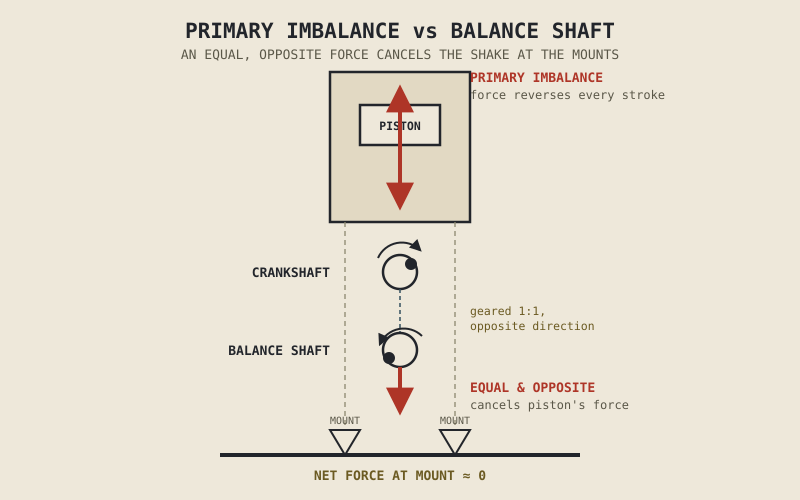

A crankshaft, spinning smoothly and continuously, is one of the easiest things in the world to balance — the same trick that balances a car wheel works perfectly well here too. A piston, stopping dead and reversing direction twice on every single stroke, is a completely different problem, and it's the reason some engines buzz numbness into your hands within twenty minutes while others, of identical displacement, feel almost turbine-smooth. This chapter is where the vibration this part has been quietly flagging since Chapter 2.5 finally gets explained properly, and resolved.
Chapter 2.5 described the piston's speed reaching zero at TDC and BDC and its maximum somewhere between them, naming this as a genuine source of vibration. Chapter 2.11 went further, explaining that certain cylinder layouts — a 90-degree V-twin, a boxer — achieve excellent smoothness because their opposing pistons' forces largely cancel each other out. This chapter formalizes exactly what's being cancelled, why some layouts can't cancel it naturally, and what engineers do about it when a layout can't.
Two Kinds of Mass, Two Kinds of Motion
An engine's moving parts split into two categories that behave completely differently under rotation. The crankshaft and its counterweights are rotating mass, moving in a perfect circle at constant speed — and rotating mass is straightforward to balance, since a matched counterweight positioned opposite it on the crank simply cancels its centrifugal effect, the same principle a wheel-balancing shop uses on a car tyre. The piston and, partially, the connecting rod are reciprocating mass, moving in a straight line back and forth rather than in a circle — and Chapter 2.5 already established that this straight-line motion involves constant acceleration and deceleration, reaching zero speed and maximum acceleration at both TDC and BDC.
That acceleration is the entire source of the problem this chapter addresses. Newton's own physics says a mass being accelerated exerts a reaction force, and a piston being violently accelerated and decelerated twice per revolution exerts exactly that kind of reaction force back into the engine, transmitted through the cylinder into the whole chassis. Rotating mass can be balanced by a simple opposing counterweight. Reciprocating mass, moving back and forth rather than around in a circle, cannot be cancelled the same simple way — which is exactly why this is a genuinely harder problem than balancing a spinning wheel.
Primary and Secondary Imbalance
The dominant vibration this reciprocating motion produces occurs once per crankshaft revolution, matching the piston's single acceleration cycle up and down the cylinder — this is called primary imbalance, and it's the vibration a single-cylinder engine feels most obviously, since it has nothing else in the engine working against it.
There's a second, subtler vibration layered on top of it, occurring twice per revolution rather than once. Chapter 2.5 explained that the connecting rod doesn't stay perfectly vertical through the stroke — it angles as it follows the crank pin's circular path — and this angling means the piston doesn't move in a perfectly smooth, symmetric pattern between TDC and BDC; it accelerates slightly differently on each half of the stroke. This asymmetry produces a second, higher-frequency vibration called secondary imbalance, generally smaller in magnitude than primary imbalance but still a real, measurable contributor to how an engine feels, especially at higher RPM where its frequency climbs alongside engine speed.
How Layout Determines Balance, Revisited
Chapter 2.11 already previewed the punchline here, and this chapter can now explain the mechanism behind it directly. A single-cylinder engine has one piston's primary imbalance with nothing to cancel it, and typically needs a balance shaft — a separate, counter-rotating shaft carrying an eccentric weight, geared to spin at crankshaft speed and positioned to generate an inertial force equal and opposite to the piston's own — to run smoothly. A conventional parallel twin, with both pistons rising and falling together, actually doubles this problem rather than solving it, since both pistons accelerate and decelerate in the same direction at the same time, which is exactly why many parallel twins also rely on balance shafts, and why alternative crank arrangements — a 270-degree crank instead of the traditional 360-degree layout — trade some smoothness for a different, more engaging firing character, changing both the firing interval Chapter 2.10 described and the balance characteristics this chapter covers in a single design decision.
A 90-degree V-twin achieves its excellent primary balance because its two pistons' reciprocating forces, acting at right angles to each other, largely cancel when combined — the geometric reason Chapter 2.11 stated as a conclusion. A boxer's directly opposing pistons cancel primary imbalance even more directly, though the fact that the two cylinders sit slightly offset from each other along the crankshaft, rather than perfectly in line, introduces a small rocking couple — a mild twisting effect rather than a straight-line shake, worth naming honestly even though it's a much smaller concern than the vibration a single or parallel twin contends with. An inline-four, with its cylinders' pistons arranged so two move up while two move down, cancels primary imbalance naturally and effectively — one of the real reasons inline-fours earned their reputation for smoothness — while still carrying some secondary imbalance that more refined designs address with dedicated secondary balance shafts.
Balance shafts don't remove vibration. They manufacture an equal, opposite vibration on purpose, timed precisely to cancel the engine's own — solving a mechanical problem by deliberately creating its mirror image.

A single-cylinder engine's primary imbalance force shown alongside a counter-rotating balance shaft generating an equal, opposite inertial force, with the two forces cancelling at the engine mounts.
A Common Misconception, Cleared Up Early
It's tempting, after Chapter 2.11's discussion of engine character and sound, to treat vibration as purely a matter of feel or branding — something riders simply learn to love or tolerate depending on the layout. Real, sustained vibration is a genuine engineering problem with genuine consequences: it fatigues fasteners and welds over time, can crack wiring and mounting brackets, and causes real rider fatigue and hand numbness on long rides, which is precisely why manufacturers invest real money in balance shafts, rubber engine mounts, and counterweighted cranks rather than simply accepting whatever vibration a given layout happens to produce.
At the same time, it's worth resisting the opposite oversimplification — that smoother is always strictly better. Some manufacturers deliberately leave a measure of vibration in an engine's character as a felt, marketed part of the riding experience, particularly on certain V-twins where a bit of pulse and shake is treated as identity rather than flaw. This is a genuine design choice with a real cost-benefit calculation behind it, not an oversight: full balancing adds weight, complexity, and cost that isn't always worth paying for an engine whose character partly depends on the very vibration a balance shaft would remove.
Where This Leads
This chapter closes the case this part has been building since Chapter 2.5: piston motion, cylinder layout, and firing interval together determine not just how an engine sounds and delivers power, but how it physically shakes in your hands. Nearly everything covered in Part II so far has assumed a four-stroke cycle without stating that assumption directly. Chapter 2.18 finally makes that assumption explicit, contrasting the four-stroke engine this entire part has described against the two-stroke alternative, and explaining exactly what that other cycle trades away and gains in return.
Key Concepts to Remember
- Rotating mass, like the crankshaft, is straightforward to balance with a simple opposing counterweight; reciprocating mass, like the piston, moves back and forth rather than in a circle and cannot be cancelled the same simple way.
- Primary imbalance is a once-per-revolution vibration from the piston's basic acceleration and deceleration through the stroke; secondary imbalance is a subtler, twice-per-revolution vibration caused by the connecting rod's angularity.
- A conventional parallel twin's synchronized pistons double primary imbalance rather than cancelling it, while a 90-degree V-twin's angled cylinders and a boxer's directly opposing pistons largely cancel it through geometry alone.
- Balance shafts resolve imbalance a layout can't cancel naturally by generating an equal, opposite inertial force on purpose, timed to counteract the engine's own vibration.
- Vibration is a real engineering problem affecting durability and rider fatigue, not merely a matter of character — though some manufacturers deliberately preserve some vibration as a felt part of an engine's identity, a genuine trade-off rather than an oversight.
Cross-References
| ← Ch. 2.5 | First identified piston acceleration as a source of vibration; this chapter gives that vibration its full mechanical explanation. |
| ← Ch. 2.10 | Introduced firing intervals; this chapter shows how crank arrangement choices affect both firing interval and balance simultaneously. |
| ← Ch. 2.11 | Previewed why certain layouts achieve natural balance; this chapter explains the underlying mechanism in full. |
| → Ch. 2.18 | Turns to the two-stroke cycle, contrasting it against the four-stroke engine this entire part has assumed throughout. |